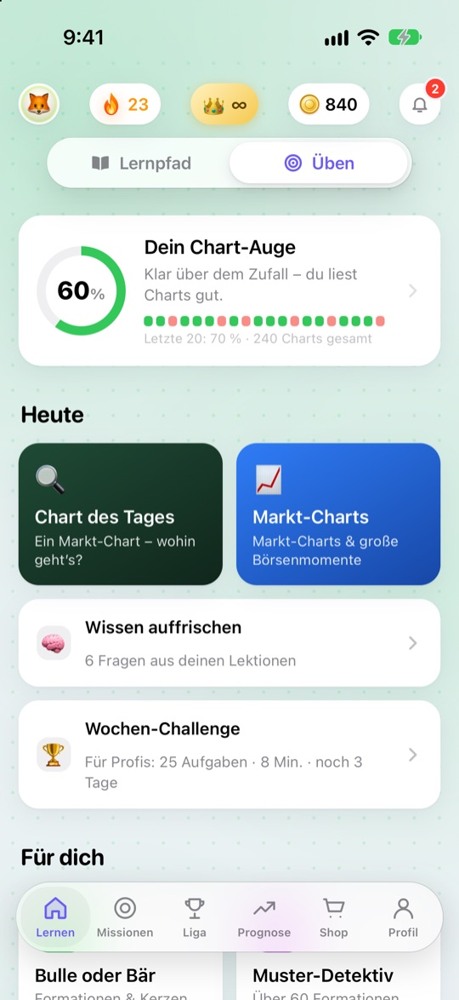

Kerzenmuster
Doji-Kerze: Bedeutung und die 4 wichtigsten Arten
Beim Doji liegen Eröffnung und Schluss fast gleich auf. Das sieht unscheinbar aus, kann aber das Ende eines Trends anzeigen. Hier lernst du die vier wichtigsten Doji-Arten und wann sie zählen.

Eine Doji-Kerze entsteht, wenn Eröffnungs- und Schlusskurs fast gleich sind. Der Körper schrumpft zu einem Strich, oben und unten können Dochte hängen. Der Begriff kommt aus dem Japanischen, wo die Kerzencharts entstanden sind, und bedeutet so viel wie „das Gleiche“.
Der Doji zeigt Unentschlossenheit: Käufer und Verkäufer haben sich im Lauf des Tages gegenseitig ausgeglichen. Nach einem langen Trend kann genau das ein frühes Zeichen sein, dass die Kraft nachlässt.
Woran du einen Doji erkennst

- Eröffnung und Schluss liegen (fast) gleich auf. Eine verbreitete Faustregel: Der Körper ist höchstens etwa ein Zehntel so groß wie die ganze Spanne vom Tief bis zum Hoch.
- Die Dochte können unterschiedlich lang sein. Ihre Länge bestimmt, um welche Art Doji es sich handelt.
- Die Farbe spielt kaum eine Rolle, weil der Körper ohnehin nur ein Strich ist.
Wie Körper und Dochte entstehen, erklärt der Artikel Kerzenchart lesen.
Die 4 wichtigsten Doji-Arten

| Art | Form | Was sie zeigt |
|---|---|---|
| Standard-Doji | Strich in der Mitte, kurze Dochte oben und unten | Gleichgewicht, wenig Bewegung |
| Long-Legged Doji | Strich in der Mitte, lange Dochte oben und unten | heftiges Hin und Her, am Ende unentschieden |
| Libellen-Doji (Dragonfly) | Strich am oberen Ende, langer Docht nach unten | Tiefe Kurse wurden abgelehnt. Nach einem Rückgang ein mögliches Wendesignal. |
| Grabstein-Doji (Gravestone) | Strich am unteren Ende, langer Docht nach oben | Hohe Kurse wurden abgelehnt. Nach einem Anstieg ein Warnsignal. |
Der Libellen-Doji ähnelt einem Hammer, der Grabstein-Doji einer Sternschnuppe. Bei beiden Doji-Formen fehlt aber der Körper fast ganz.
Ist ein Doji bullisch oder bärisch?
Für sich genommen keines von beiden. Entscheidend ist der Zusammenhang:
- Nach einem Aufwärtstrend, vor allem an einem Widerstand, deutet ein Doji darauf hin, dass die Käufer an Schwung verlieren. Ein Grabstein-Doji gilt hier als besonders deutliches Warnsignal.
- Nach einem Abwärtstrend, etwa an einer Unterstützung, kann ein Doji zeigen, dass der Verkaufsdruck nachlässt. Ein Libellen-Doji ist hier das stärkste Zeichen.
- In einer Seitwärtsphase sind Dojis häufig und sagen wenig. Dort ist Unentschlossenheit der Normalzustand.
Die Bestätigung abwarten
Ein Doji ist ein Hinweis, keine Entscheidung. Viele Trader warten auf die nächste Kerze:
- Schließt sie nach einem Anstieg unter dem Tief des Dojis, gilt das Warnsignal als bestätigt.
- Schließt sie nach einem Rückgang über dem Hoch des Dojis, gilt die mögliche Wende als bestätigt.
- Läuft der Kurs in die alte Richtung weiter, war der Doji nur eine Atempause.
Ein Beispiel
Eine Aktie steigt in drei Wochen von 80 € auf 95 € und erreicht ein früheres Hoch. Dann entsteht diese Kerze:
| Eröffnung | Hoch | Tief | Schluss |
|---|---|---|---|
| 95,10 € | 96,40 € | 93,80 € | 95,05 € |
- Körper: 95,10 € − 95,05 € = 0,05 €.
- Spanne: 96,40 € − 93,80 € = 2,60 €. Der Körper macht also nur rund 2 % der Spanne aus.
- Dochte: oben 1,30 €, unten 1,25 €, also fast gleich lang.
Ein Doji mit langen Dochten, also ein Long-Legged Doji. Am Folgetag schließt die Aktie bei 93,20 €, unter dem Tief des Dojis. Viele Trader werten das als bestätigtes Warnsignal: Am alten Hoch fehlt den Käufern die Kraft.
Doji und andere Werkzeuge
Ein Doji wird aussagekräftiger, wenn weitere Hinweise dazukommen:
- Zonen: Ein Doji direkt an einer Unterstützung oder einem Widerstand zählt mehr als einer mitten in einer Bewegung.
- Volumen: Hohes Volumen am Doji-Tag zeigt, dass viele Marktteilnehmer um die Richtung ringen.
- Indikatoren: Ein Doji bei einem RSI über 70 oder unter 30 passt ins Bild einer überdehnten Bewegung. Was diese Werte bedeuten, erklärt der Artikel RSI einfach erklärt.
- Mehrere Kerzen: Der Doji ist oft die mittlere Kerze eines Morgen- oder Abendsterns. Diese Muster zeigt der Überblick Kerzenmuster.
Typische Fehler
- Jeden kleinen Körper für ein Signal halten. In ruhigen Phasen entstehen Dojis ständig.
- Die Richtung erraten. Ein Doji zeigt nur, dass sich Käufer und Verkäufer die Waage halten. Die Richtung zeigt erst die nächste Kerze.
- Den Trend davor übersehen. Ohne vorherigen Trend gibt es nichts, was enden könnte.
- Zu kleine Zeiteinheiten. Im Minutenchart ist ein Doji oft reiner Zufall.
Doji-Kerzen erkennen üben
In InQuestly erklärt die Gratis-Lektion „Kerzen lesen“ im Kurs Charttechnik & Muster, wie Körper und Dochte entstehen. Doji, Libelle, Grabstein und die anderen Kerzenmuster behandelt der Kurs „Kerzenmuster“ mit InQuestly Pro. Im Gratis-Spiel „Bulle oder Bär?“ deutest du Charts per Wischen und bekommst nach jeder Runde eine Erklärung. Die Kursverläufe zum Üben sind nachgebildet, echtes Geld ist nie im Spiel.
Häufige Fragen
Was bedeutet eine Doji-Kerze?
Eröffnungs- und Schlusskurs liegen fast gleich auf, Käufer und Verkäufer haben sich die Waage gehalten. Nach einem langen Trend kann das auf nachlassende Kraft hindeuten.
Ist ein Doji bullisch oder bärisch?
Für sich genommen keines von beiden. Nach einem Anstieg gilt er eher als Warnsignal, nach einem Rückgang als mögliches Zeichen für eine Wende. Bestätigt wird das erst durch die nächste Kerze.
Was ist ein Libellen-Doji?
Ein Doji, bei dem Eröffnung und Schluss am Hoch liegen und ein langer Docht nach unten zeigt. Tiefe Kurse wurden abgelehnt, nach einem Rückgang ist das ein mögliches Wendesignal.
Was ist ein Grabstein-Doji?
Ein Doji, bei dem Eröffnung und Schluss am Tief liegen und ein langer Docht nach oben zeigt. Hohe Kurse wurden abgelehnt, nach einem Anstieg gilt das als Warnsignal.
Wie klein muss der Körper eines Dojis sein?
Eine feste Grenze gibt es nicht. Eine verbreitete Faustregel: höchstens etwa ein Zehntel der Spanne vom Tief bis zum Hoch.
Was bedeutet Doji auf Deutsch?
Der Begriff kommt aus dem Japanischen und bedeutet so viel wie „das Gleiche“, weil Eröffnung und Schluss gleich sind.
Dieser Artikel dient der Bildung und ist keine Anlageberatung. Beispiele sind vereinfacht und ohne Steuern dargestellt.